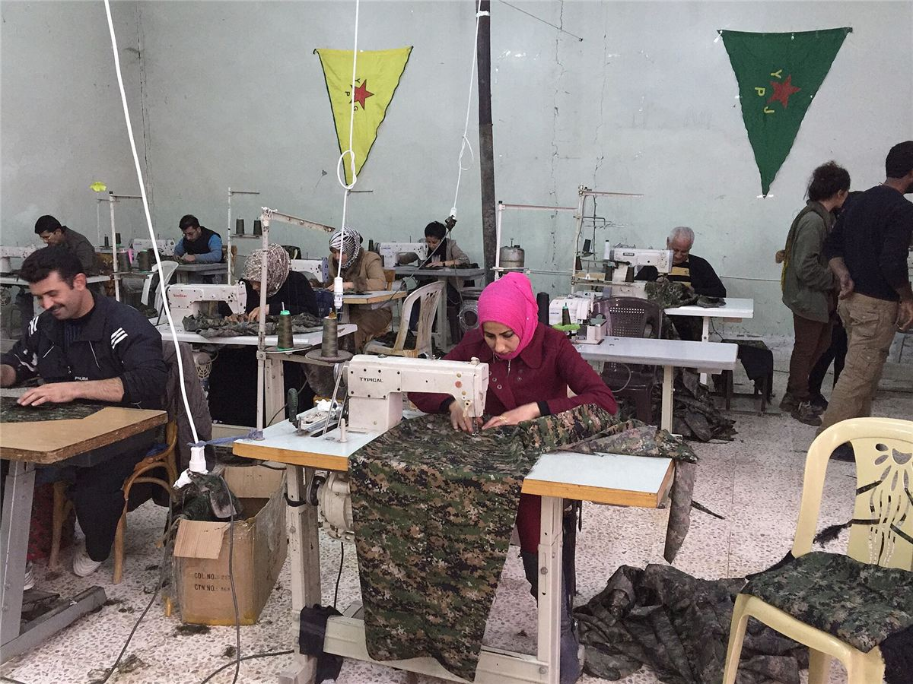

« Jin, jiyan, azadî »
« Femme, vie, liberté » : ce slogan kurde, repris dans le monde entier lors du soulèvement iranien de 2022, résume la place centrale des femmes dans le projet. Pour le mouvement, aucune société ne sera libre tant que les femmes ne le seront pas.
- YPJ : unités de défense composées uniquement de femmes, en première ligne contre l'État islamique.
- Maisons des femmes : chaque ville en a une, pour régler les conflits familiaux, accueillir les victimes de violences, former.
- Lois : interdiction du mariage forcé et du mariage des mineures, de la polygamie, du « crime d'honneur » ; égalité dans l'héritage et le témoignage.
- Jineolojî : « science des femmes », un champ de recherche et d'éducation qui relit l'histoire et la société depuis le point de vue des femmes.
- Jinwar : un village écologique construit et habité par des femmes.
Écologie et économie

Le nord-est syrien a hérité d'une monoculture de blé et de pétrole imposée par le régime. Le projet prévoit de diversifier les cultures, de reboiser et de développer des coopératives. La campagne « Make Rojava Green Again » a soutenu des pépinières et des projets agricoles. Dans les faits, la guerre, le blocus et les coupures d'eau de l'Euphrate limitent fortement ces ambitions, et le pétrole reste une ressource centrale.
Les critiques
Les libertaires qui soutiennent le Rojava ne le regardent pas sans esprit critique. Les débats les plus fréquents :
- Le parti : des cadres formés par le mouvement lié au PKK pèsent lourd dans les décisions, au-dessus des structures de base.
- Le culte du chef : la place des portraits et de la pensée d'Öcalan heurte l'antiautoritarisme.
- Le service obligatoire : le « devoir d'autodéfense » impose une conscription aux jeunes hommes.
- Le pluralisme : des partis kurdes rivaux ont été réprimés à certains moments ; des médias ont été fermés.
- La guerre et les alliances : l'alliance militaire avec les États-Unis contre l'État islamique pose question, comme les camps où sont détenues les familles de djihadistes.
- Le salariat et la propriété : l'économie coopérative reste minoritaire face au commerce privé.
Comparer avec l'Espagne et le Chiapas
| Espagne 1936 | Zapatistes | Rojava | |
|---|---|---|---|
| Unité de base | Syndicat, collectivité | Communauté | Commune |
| Coordination | Fédérations | Collectifs, assemblées | Conseils fédérés |
| Femmes | Mujeres Libres, autonome mais non reconnue | Loi révolutionnaire des femmes | Co-présidence, structures autonomes |
| Défense | Milices, puis armée | EZLN, qui ne gouverne pas | YPG, YPJ, FDS |
| Rapport à l'État | Cohabite puis entre au gouvernement | Construit sans lui | Négocie avec lui |
À retenir
- La libération des femmes au centre du projet.
- Une expérience réelle, à soutenir sans l'idéaliser.
- Pour aller plus loin : Espagne 1936 et zapatistes.
Sources et pour aller plus loin
Lire
- Kobane Calling, Zerocalcare, Cambourakis, 2016.Les combattantes des YPJ vues de près, en bande dessinée.
- Un autre futur pour le Kurdistan ?, Pierre Bance, Noir et Rouge, 2017.Une lecture libertaire qui n'élude pas les critiques.
Sur le web
- La jinéologieLa « science des femmes » développée par le mouvement kurde.
- L'Administration autonomeSuivre la situation actuelle, très menacée.
Dossier rédigé par la bande à Mamie à partir de travaux d'historiennes et d'historiens et de textes des mouvements concernés. Libre de reproduction.